그곳은 놀랍게도

베트남이다!
베트남은 주로 열대 기후라는 이미지가 있지만
싱갤을 오래 한 사람이라면 베트남은 남북으로 길쭉하기 때문에 북부와 남부의 차이가 크다는 사실을 알고 있을 거다
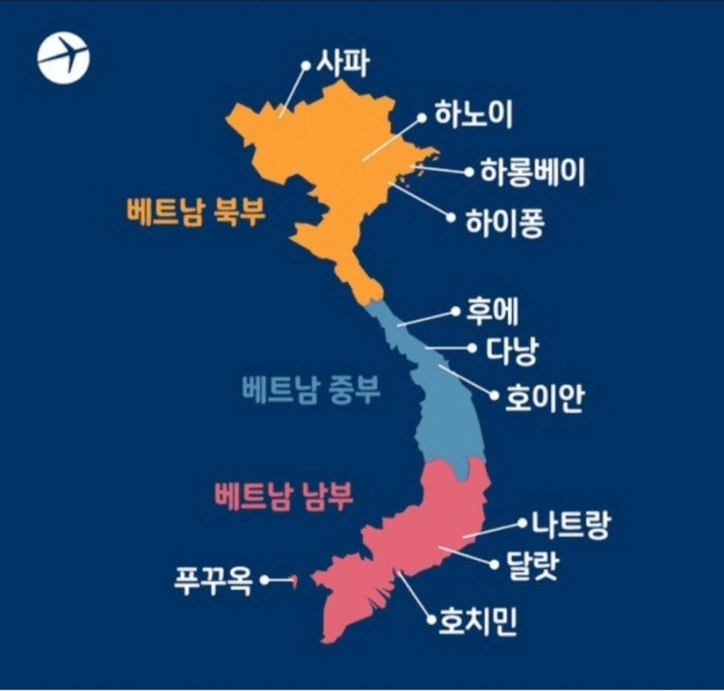
하노이는 북위 21도에 있는데 중국 최남단 하이난성보다 북쪽에 있음. 이 지도에서 북부에 해당하는 곳은 열대기후보단 온대기후에 가깝다
당연히 눈을 볼 수 있는 곳도 북부에만 한하고
그 중에서도 요즘 베트남 관광의 숨겨진 명소 라오까이성 사파로 가면 된다
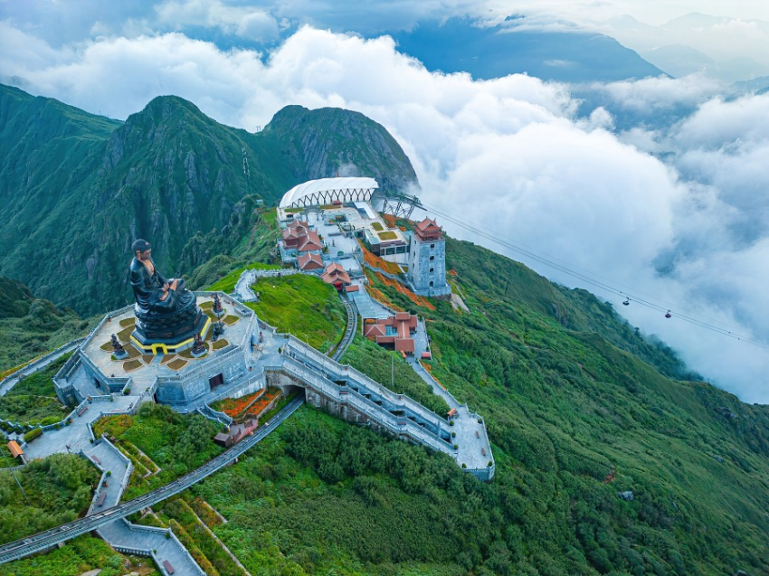
여긴 북위 22도로 홍콩과 동위도에 있고
특히 해발고도 1500m가 넘기 때문에 동위도보다 훨씬 추운 편. 그래서 겨울엔 이런 모습도 볼 수 있는 것이다
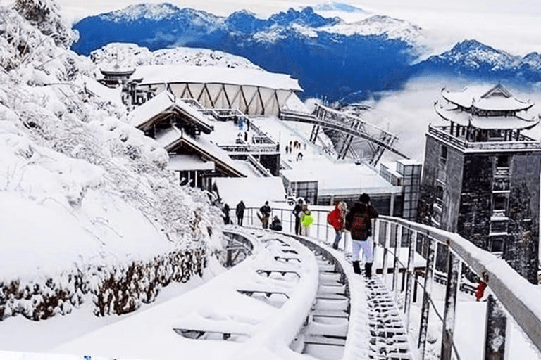
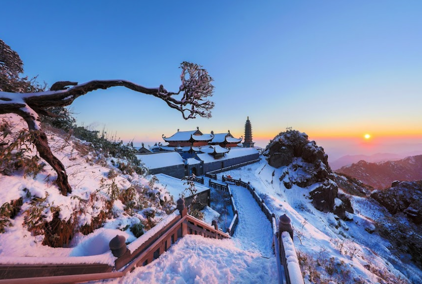
여긴 베트남 최고봉 판시판산으로 해발 3143m다
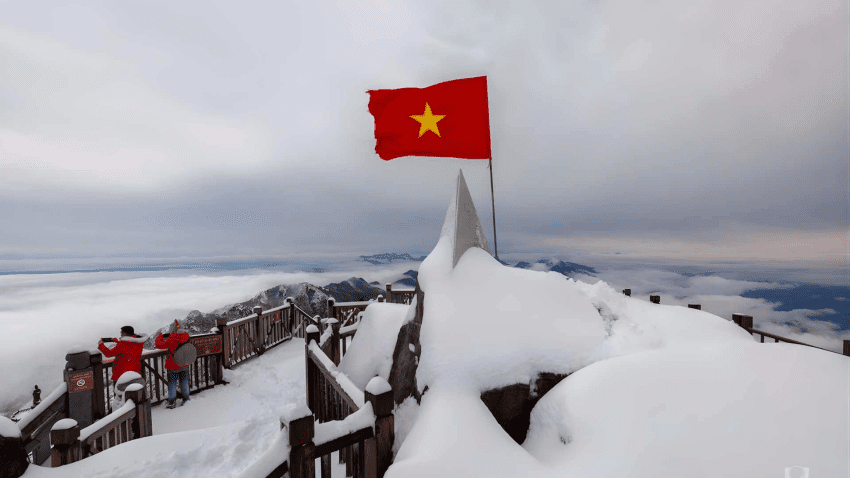
베트남 여행 갈일 있으면 여길 가봐도 되겠는데? 남부는 더우니까 처음에는 북부 위주로 가보고 싶음
베트남이 동아시아 호소국인 이유가 하나 더 생겨버린 것 같음
베트남 이외에도 이미지와 달리 겨울에 눈이 내리는 나라들은 더 있다
남반구 국가들도 중위도에 있는 아르헨티나 호주 뉴질랜드 남아공같은 나라들은 눈이 내리는 걸 볼 수 있음
호주는 올해 동계올림픽에서 금메달 3개나 땄다
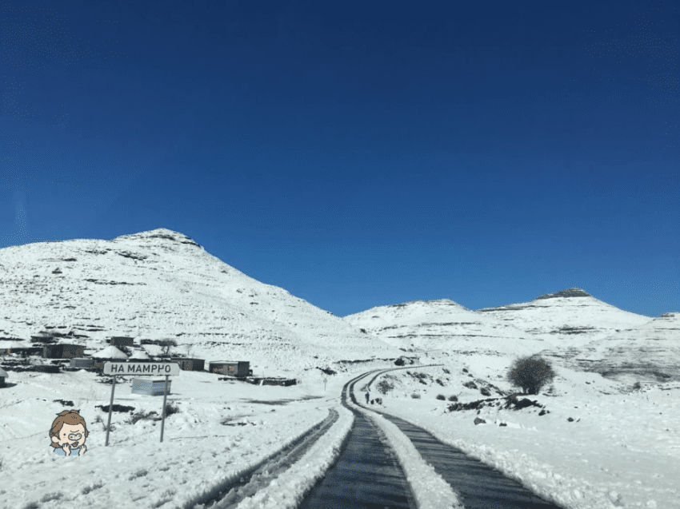
사막은 강수량이 적을 뿐이지 일교차가 크고 고도 높은 곳도 있어서 사하라 사막이나 아라비아 사막은 위도도 중위도이기 때문에 강수가 내릴 수만 있다면 겨울에 눈이 내리는 경우도 드물게 있다
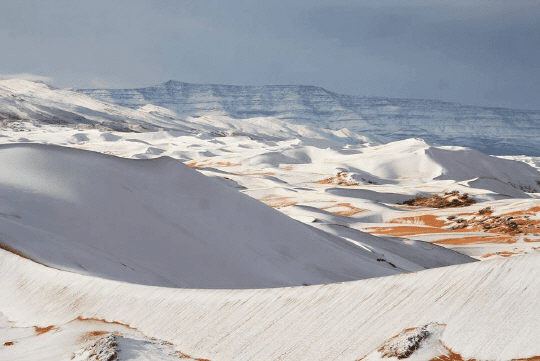
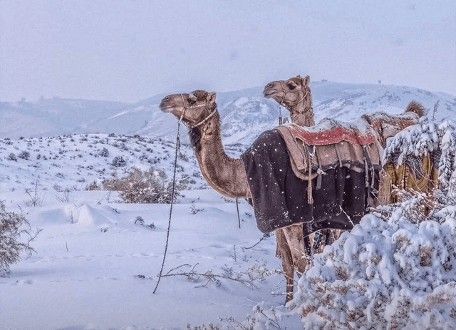
저위도에 속한 중남미 국가들도 해발고도가 높은 곳이 많기 때문에 북위 20도대인 멕시코에도 눈이 내릴 수 있고 안데스 산맥도 눈이 쌓여 있다
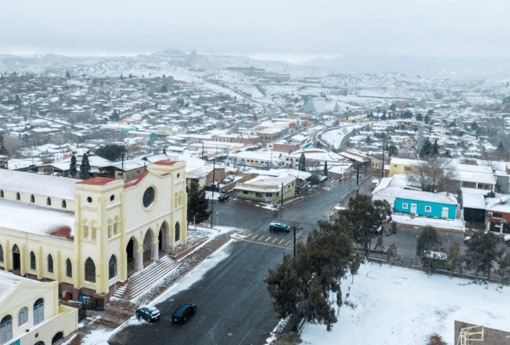
이론상 눈이 내리는 가장 낮은 고도는 무려 적도에서도 가능하며, 이름 자체가 적도라는 뜻인 에콰도르의 카얌베 산은 정말로 적도가 정확히 지나가고 있는데 해발 5800m에 있기 때문에 만년설이 존재한다. 위도와 고도가 비슷한 킬리만자로의 만년설도 점차 녹아내리는데 여기는 눈이 더 많이 남아 있음
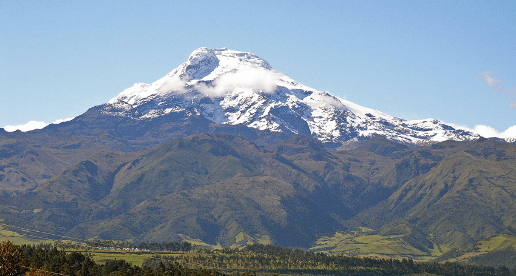
이 지도는 1940년 이후 눈이 1번이라도 내렸던 지역들을 나타낸 지도이다
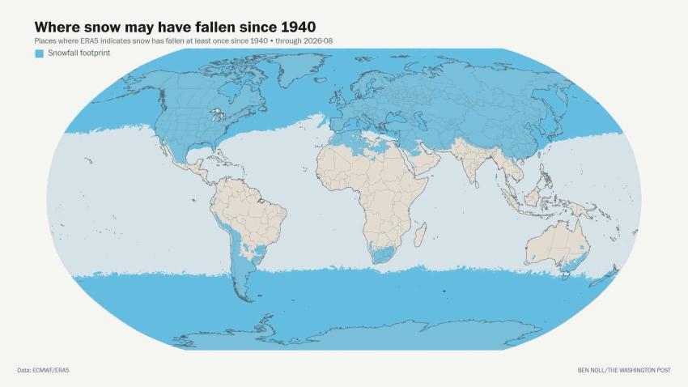
원래 위도 40도는 넘어가야 반드시 눈이 내린다고 하는데 북위 30도대 중후반에 있는 한국조차 눈이 내리게 하는 시베리아 기단의 위엄인 걸까
댓글
수집 당시 댓글 51개
고도리치 · 11.13 21:40:30
ㅇㅇ · 11.13 21:40:38
ㅇㅇ · 11.16 08:02:26
· 실베도로롱 · 11.16 08:04:40
실베도로롱 · 11.16 08:02:50
· 실베도로롱 · 11.16 08:03:08
· ㅇㅇ · 11.16 08:03:18
ㅇㅇ · 11.16 08:03:35
· ㅇㅇ · 11.16 12:36:48
봇치쟝 · 11.16 08:06:17
· ㅇㅇ · 11.16 08:10:47
· 폭진이 · 11.16 08:11:52
ㅇㅇ · 11.16 08:06:53
눈왔노
ㅇㅇ · 11.16 08:08:36
· ㅇㅇ · 11.16 08:10:14
· 해석가 · 11.16 08:17:19
· ㅇㅇ · 11.16 08:20:42
· ㅇㅇ · 11.16 08:35:20
· ㅇㅇ · 11.16 08:36:07
· ㅇㅇ · 11.16 08:38:25
· ㅇㅇ · 11.16 14:09:01
· ㅇㅇ · 11.16 16:30:32
ㅇㅇ · 11.16 08:16:59
· 공정성장 · 11.16 08:40:32
ㅇㅇ · 11.16 08:19:23
Zintp_찐팁 · 11.16 08:23:51
네소베리안 · 11.16 08:24:30
한동훈 · 11.16 08:25:59
Doll · 11.16 08:30:09
실비치노 · 11.16 08:30:18
ㅇㅇ · 11.16 08:32:17
ㅇㅇ · 11.16 08:47:37
ㅇㅇ · 11.16 08:52:59
· ㅇㅇ · 11.16 08:57:16
파치카 · 11.16 08:54:38
ㅇㅇ · 11.16 09:12:04
ㅇㅇ · 11.16 09:17:19
ㅇㅇ · 11.16 09:17:53
ㅇㅇ · 11.16 09:23:23
ㅇㅇ · 11.16 09:25:32
· ㅇㅇ · 11.16 09:25:52
ㅇㅇ · 11.16 09:28:16
ㅇㅇ · 11.16 09:32:57
ㅇㅇ · 11.16 09:41:21
판갤러 · 11.16 09:58:20
발정난 베트남 원숭이 🐵
ㅇㅇ · 11.16 10:42:45
ㅇㅇ · 11.16 10:43:50
22 · 11.16 10:57:09
ㅇㅇ · 11.16 12:30:49
신 석 열 · 11.16 13:06:34
아빠
왔노
ㅇㅇ · 11.16 19:18:53